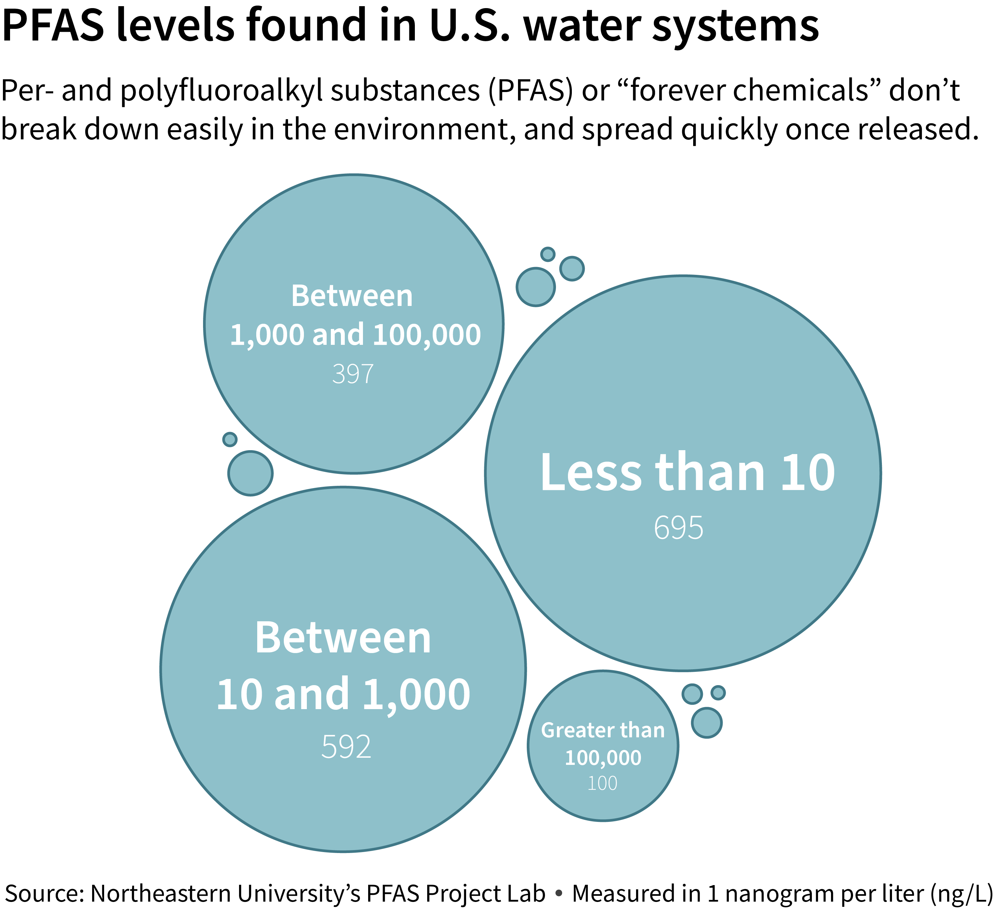

Per- and polyfluoroalkyl substances, commonly known as PFAS, are a group of man-made chemicals that have been used in a wide range of industrial and consumer products since the 1940s, according to the National Institutes of Health. These substances are highly resistant to water and heat, which make them attractive ingredients for products, such as non-stick cookware, food packaging and firefighting foam.
Recent studies have shown that PFAS contamination is becoming a significant problem in the United States, with potentially serious health and environmental consequences.
PFAS chemicals are known as "forever chemicals" because they do not break down in the environment and can accumulate in living organisms, including humans. Exposure to PFAS has been linked to a range of health problems, including increased cholesterol levels and increased risk of kidney cancer. PFAS contamination has been found in soil and water sources across the United States.
Most people in the United States have already been exposed to PFAS, and have PFAS in their blood, according to the Centers for Disease Control and Prevention.
While PFAS contamination is widespread, contaminated water sites are more prevalent in ZIP codes that are poorer and more racially diverse. Of the ZIP codes where PFAS was detected in water sites, 49% were in ZIP codes where the median household income was below the 2020 national average of $67,521.
One in six ZIP codes with PFAS-contaminated water sites have a higher proportion of non-white population than the national average of 42.2%. A 2019 report from the Natural Resources Defense Council found that communities of color face an increased risk of exposure to unsafe water.
The problem is particularly acute around military bases. In many cases, groundwater and soil around these bases have become contaminated, posing a risk to nearby communities. Data from Northeastern University's PFAS Project Lab shows that out of the known PFAS sites in this country, the majority are sourced from landfills and military bases or facilities.
Despite the growing evidence of the health risks associated with PFAS exposure, regulation of these chemicals has been slow to come. The Environmental Protection Agency is responsible for monitoring PFAS contamination across the U.S. In October 2021, the EPA released its plan for addressing the problem, but by early 2023, it had only issued a few advisories and missed key deadlines.
This past March, the EPA proposed the first federal limits on six forever chemicals in drinking water. The proposal includes setting a limit of 4 parts per trillion, the lowest level that can be accurately measured, for two types of PFAS chemicals called PFOA and PFOS. The EPA is currently undergoing a three-year testing period where its assessing public water systems across the country for contaminants, including 29 PFAS compounds.
Some states have also taken action to raise awareness and regulate PFAS levels by launching testing programs and building interactive dashboards. While data shows that PFAS have become more prevalent in this country's water systems, the rise in number of sites is likely the result of an increase in testing nationwide. The number of new detections in water sources each year rose from 750 in 2013 to 2,313 in 2021 – a roughly 208% increase.
Maryland is among the states working toward reducing PFAS in the environment. The state’s environmental department began testing water systems in 2020, and has since completed several rounds of testing. In addition to testing water treatment centers and public water systems, the state has also committed to a joint effort with the U.S. Department of Defense to evaluate PFAS levels at military bases and other facilities across the state. According to the state’s website, PFAS compounds have been found at the following military bases or facilities: